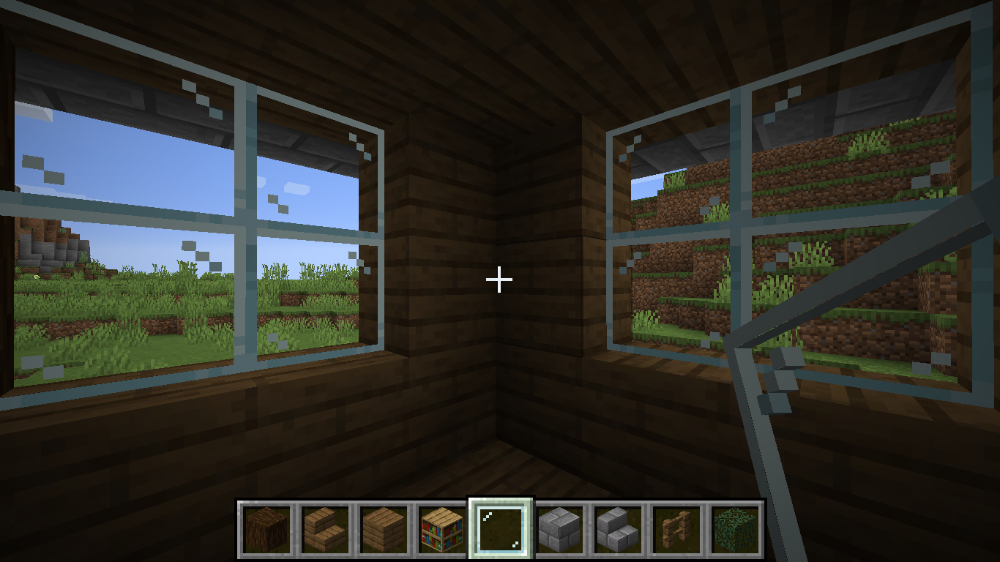
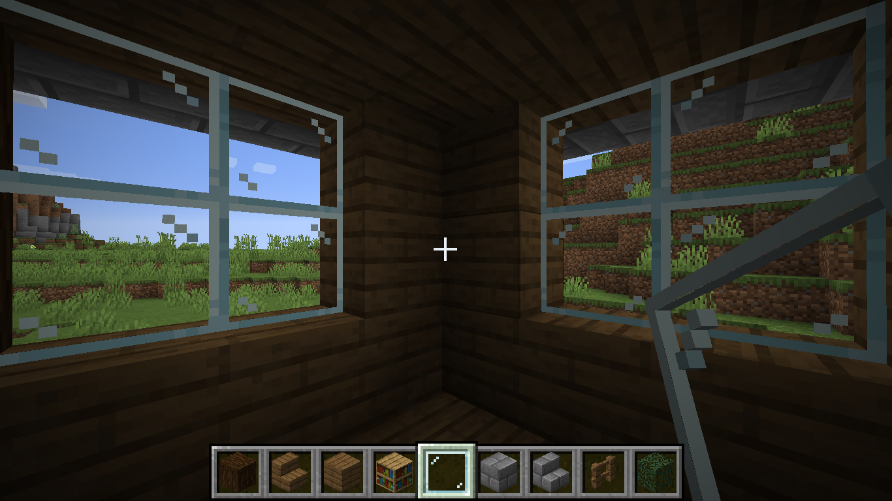

Minecraft
Minecraft-это строительная игра жанра «песочница» созданная Маркусом Перссоном, основателем Mojang AB. Игра позволяет игрокам создавать и разрушать различные блоки и использовать предметы в трёхмерном окружении.

Строительство
Одно из самых популярных направлений в Minecraft это строительство. Многие игроки хотят научится строить. Это маленький тотуриал по строительству
Мини домик
Итак, будем строить вот этот домк. Он маленкий, лёгкий и красивый. Так же там использованны блоки, которые есть на всех версиях Майнкрафт.
Для начала нам понадобятся примерно вот такой набор блоков ( у меня дерево - ель, я использую его, вы можете брать любое другое ). Так же нужно немного места, ведь нвш домик маленький.
Далее из досок строим квадрат 5/6 блоков, на любой стороны, длинной 6 блоков по середине ставим 2 ступеньки. Это - наш будущий вход.
После удаляем каждый угловой блок и на месте нго ставим столбик из брёвен высотой в 5 блоков.
Добовляем окна 2/2 блока и стены. Ставим два блока у ступенек с двух сторон ( если они не будут смотрется после ещё нескольких этапов, то их можно будет изменить на любые по вашему вкусу ).
Делаем дверной проход и обставляем дом листвой по периметру, с переди делаем так, как на скриншоте.
Далее над дверным проёмом ставим два блока досок и обставляем ступенями ( я беру из каменного кирпича вы можете брать любые, но главное не ступеньки из древисины, которую вы используете в основе ).
Обводим теми самыми ступенями наш дом сверху, как на скрине. Делаем подпорки из ограды тоже, как та скриншоте.
Достраеваем крышу ступеньками из нашей основной древесины ( крышу можно продалжать делать полублоками ).
Потом вставляем стеклянные пластины в наши вырезы для окон.

В углу ставим перевёрнутую ступень и на неё 2 блока книжных полок.
Теперь ставим двери и кроватку таким образом.
Повторяем наш книжный шкафчик с другой стороны и делаем рабочий столик. Для этого ставим одну перевёрнутую ступень к стене а другую ставим перед ней ( как на скрине ).
Ставим верстак, печку и сундучёк у окна и у столика.
Далее стелим ковёр под цвет кровати и ставим цветочек в горшочке ( у меня кактус )

Наш маленький домик готов:)